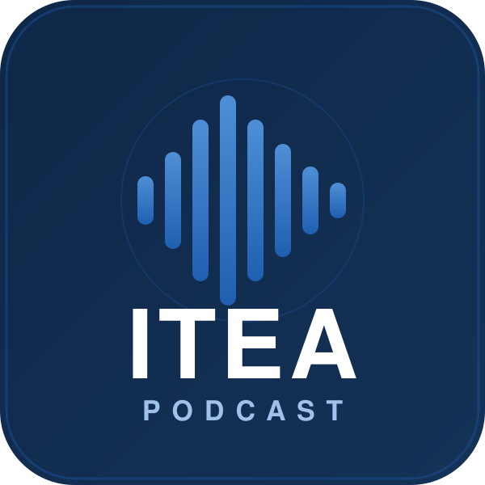

🌐 Español · English · más idiomas próximamente
ITEA · PodcastConversaciones de divulgación —en formato inmersión profunda— sobre la expropiación algorítmica del trabajo: cómo la IA agéntica captura la pericia humana a nivel de tarea, qué les ocurre a las profesiones y a las universidades, y qué mecanismos podrían compensarla. A partir de los informes y papers de Alberto García-Lluis Valencia.